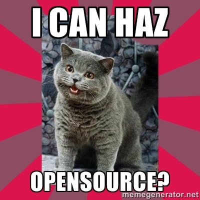
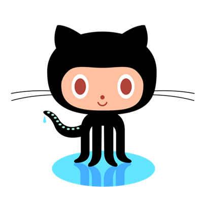
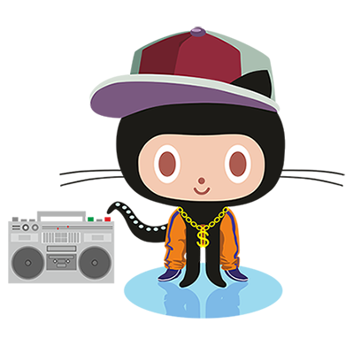
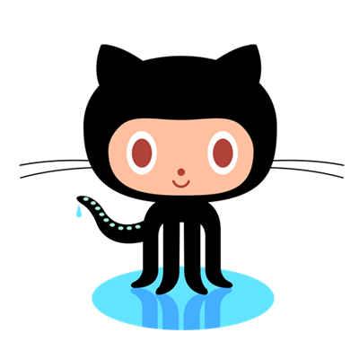
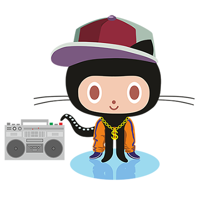
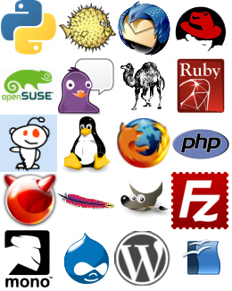

Közösségi fejlesztés a GitHubon
Who are you?
Ötvös Richárd
- diák
- junior javascript fejlesztő, Pulilab
- a Vidzor projekt tagja
- otvos.richard@gmail.com
- GitHubID: RichardOtvos
Vidzor
- Interaktív videóplatform
- Videó szereksztés, lejátszás és statisztikák
- Az online videózás élményének forradalmasítása
- HTML5 + CSS + JS + Python/Django
Git és GitHub

Git
- Elosztott verziókezelő
- Mindekinél ott a teljes repository
- gyors, népszerű
- Interaktív Git tutorial
- Git doksik
Github
- tárhely a forráskódnak
- közösségiportál a fejlesztőnek
- issue tracker
- egyszerű microsite létrehozás
- Könnyű közreműködés
- GitHub tutorial
 



OpenSource fejlesztés
Mi is az open source?
- Fejlesztési modell
- Üzleti stratégia
- A forráskód bárki számára hozzáférhető
- Általában nagy közösség
- Nemcsak a szofteriparban pl.: OS cola, OS elektronika, OS gyógyászat
Mennyire open az open?
- Különböző licensek, különböző mértékű szabadság
- Teljesen szabad, copyleft és ezek variációi
- MIT, Apache, GPLv2, GPLv3, PublicDomain, BSD
- ChooseALicense.com
Ismertebb opensource cégek és termékek
